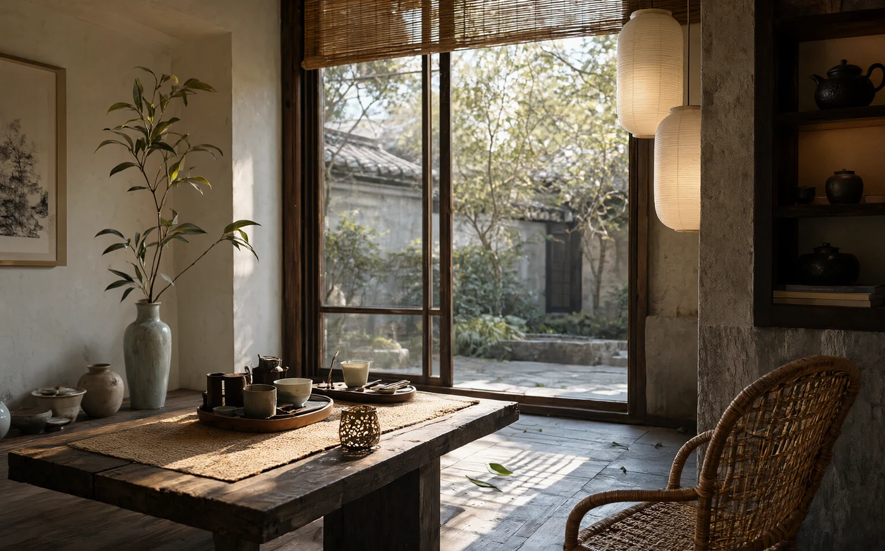

04 到访 / Visit
上山，
喝茶。
茶室在慧苑坑的谷底，只有三张桌子。每天三席，每席九十分钟，只泡当季的茶。我们会先问你平时喝什么，再决定今天开哪一罐。
福建省武夷山市慧苑坑 27 号 · 近水帘洞

01 茶室 / The room
三张桌子，
一天三席。
不设菜单。入席先喝一杯白水，再闻当天要泡的干茶。茶点只有两样：当季的水果，和一块不加糖的米糕。
- 地址
- 福建省武夷山市慧苑坑 27 号（近水帘洞）
- 到达
- 武夷山北站打车约 25 分钟；进入景区需换乘接驳，请提前一天告知车牌。
- 休舍
- 周二、周三
02 须知 / Good to know
来之前，
三件小事。
-
01
提前一天
茶室按席备茶，不接受当日空降。预约后我们会致电确认，请至少提前一天。
-
02
迟到十五分钟
席位只保留十五分钟。山路难走，请把车程算宽一些；若会迟到，提前打个电话。
-
03
山路湿滑
茶室不提供餐食。雨天石阶湿滑，请穿防滑的鞋；夏天谷里蚊多，长裤更妥帖。
03 预约 / Reserve
留一张
靠窗的桌子。
填好下面的信息，我们会在 24 小时内致电确认。若临时有事，请至少提前四小时告知，把席位留给候位的客人。
- 微信
- JIANSHAN-TEA